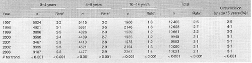
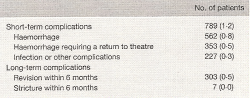
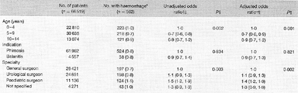

THE CIRCUMCISION REFERENCE LIBRARY
1Clinical Effectiveness Unit,
The Royal College of Surgeons of England, 2Health
Services Research Unit, London School of Hygiene and Tropical
Medicine, 3Institute of Urology and Nephrology,
University College, London, and 4Department of
Paediatric Surgery, Royal Liverpool Children’s
Hospital, Liverpool, UK and British Association of Paediatric
Surgeons Clinical Outcomes Committee, UK
Correspondence to: Dr J. van der Meulen, Clinical
Effectiveness Unit, The Royal College of Surgeons of England,
35–43 Lincoln's Inn Fields, London WC2A 3PE, UK
(e-mail: jan.vandermeulen@lshtm.ac.uk)
Background: It
has been suggested that too many English boys undergo
circumcision. This report describes how circumcision rates
have changed in England between 1997 and 2003, including data
on complication rates and on how age, medical indication and
surgical specialty affect postoperative haemorrhage
rates.
Methods: Data were extracted from
the Hospital Episode Statistics database of admissions to
National Health Service hospitals in England. Patients were
included in the study if an Office of Population Censuses and
Surveys version 4 code for circumcision was present in any of
the operative procedure fields of the database; 75 868 boys
below 15 years of age were included in the study.
Results: Circumcision rates
declined by about 20 per cent, from 2·6 per 1000 boys
per year in 1997 to 2·1 in 2003. Between 2000 and
2003, circumcision rates remained static at 2·1 per
1000 boys per year. Circumcision rates fell by 31·2
per cent for boys aged 0–4 years, 9·3 per cent
for boys aged 5–9 years and increased by 7·7 per
cent in boys aged 10–14 years; 90·2 per cent of
circumcisions were done for phimosis and 1·2 per cent
of boys experienced a complication.
Conclusion: Circumcision rates in
England continued to fall up until 2000, particularly in
those aged under 5 years, in whom pathological phimosis is
rare. The circumcision rate remains five times higher than
the reported incidence of Phimosis.
Paper accepted 24 January 2006
Published online 3 May 2006 in Wiley InterScience
(www.bjs.co.uk). DOI: 10.1002/bjs.5369
Introduction
Circumcision is a common paediatric surgical procedure. The proportion of boys circumcised during childhood varies markedly by country, by religion and, to some extent, by socioeconomic group1. The proportion of men circumcised for religious reasons, in either the USA or Europe, remains largely unknown, but it has been estimated that about 80 per cent of men are circumcised in the USA for medical reasons2, compared with about 4 per cent in English boys3 and less than 2 per cent in other parts of Europe4. There are indications that the circumcision rate is still rising in the USA5.
The only undisputed medical indications for circumcision are pathological phimosis and recurrent balanitis6. Pathological phimosis, by far the most common medical indication for circumcision, can be defined as a narrowing of the preputial orifice, leading to an inability to retract the foreskin, or prepuce, over the glans penis7. It should be distinguished from physiological phimosis, which is a normal part of penile development in which preputial adhesions, located between the glans penis and the foreskin, prevent the retraction of the foreskin in young boys. It has been argued that the circumcision rate of 4 per cent in England, although considerably lower than that in the USA, remains too high given that the incidence of phimosis has been reported to be only 0·6 per cent8,9. In addition, most boys circumcised in England are under 5 years of age, when pathological phimosis is rare3.
Circumcision, like any surgical procedure, carries a risk of complications; the reported rate varies greatly from as low as 0·06 per cent to as high as 55 per cent10,11. This variation is largely the result of the many different criteria used to define complications.
The present report describes how the paediatric medical circumcision rate has changed in England between 1997 and 2003. In addition, data were analysed on the complications of circumcision using explicit definitions. The impact of age, medical indication and surgical specialty on the rate of postoperative haemorrhage was explored. This study was based on administrative data of all admissions to hospitals of the National Health Service (NHS) in England12.
Patients and methods
Data were extracted from the Hospital Episode Statistics (HES) database. This database contains information about all admissions to NHS hospitals in England since 1989 and currently collects over 13 million records per year. Until 2002, the HES database contained seven diagnosis fields coded since 1995 according to the tenth revision of the International Classification of Diseases (ICD-10)13, and four operative procedure fields coded according to the UK Tabular List of the Classification of Surgical Operations and Procedures version 4 of the UK Office for Population Censuses and Surveys (OPCS-4)14. The number of diagnosis and procedure fields increased to 14 and 12 respectively after 2002.
HES records were considered that related to admissions between 1 April 1997 and 31 March 2004. This time interval was chosen because a unique patient identifier was introduced in April 1997, so that it was possible to link HES records that belong to the same patient.
A three-stage selection procedure was employed. First, all HES records with an OPCS-4 code indicating circumcision (N303) were identified in any of the operative procedure fields. This was labelled the index record. Second, these index records were linked with all HES records of subsequent readmissions using the unique patient identifier. Third, all HES records that related to circumcision in boys over 14 years of age were deleted.
To identify the indication for circumcision, the diagnosis fields of all index records were examined. A wide range of ICD-10 codes were identi.ed to code the indications for circumcision, including phimosis (N47, N486), balanitis (N481, N512) and ritual circumcision (Z412). Over the study interval, 75 868 boys were documented to have undergone medical circumcision and 6122 boys were documented to have undergone ritual circumcision on the basis of diagnosis coding. Boys undergoing ritual circumcision were excluded from further analysis.
The codes used to identify complications were not de.ned in advance. Instead, the diagnosis and operative fields of all hospital admissions for all boys who were likely to have had a complication of surgery were examined, that is index admissions of more than 1 day in hospital following circumcision and readmissions with 30 days after circumcision. On the basis of this examination, 19 diagnosis codes and 13 operative procedure codes that were used to record complications following circumcision were identified. These codes were then grouped into haemorrhagic, infectious and other complications, and applied to the index and 30-day readmission records of all boys included in the study. In addition, readmissions for revision circumcision (OPCS-4 code N303 in a subsequent hospital admission after the index admission) and meatal stricture dilatation (OPCS-4 code N79) within 6 months of circumcision were recorded.
The analysis of the complication rate excluded boys who had an additional operative procedure at the time of circumcision, as the complicationmay have been influenced by the additional procedure; 9349 boys (12·3 per cent) were excluded from analysis of complications for this reason.
The HES database is structured in reporting years running from 1 April to 31 March. This study reports results from 1997/1998 to 2003/2004 (subsequently referred to as 1997 to 2003). To calculate the circumcision rate in a reporting year, the number of boys who underwent circumcision in that year was divided by the mid-year estimate of the number of boys aged between zero and 14 years living in England according to the UK Office for National Statistics15.
The proportion of boys who would undergo circumcision by their 15th birthday, if the circumcision rate in a specific reporting year remained unchanged, was estimated by multiplying the circumcision rate for boys between 0 and 14 years by 15.
It was assumed that the circumcision rate estimates were Poisson-distributed counts, and Poisson regression was used to analyse trends over time. The complication rate was described as a percentage. Multivariate logistic regression was used to describe the risk of postoperative haemorrhage according to age, indication and surgical specialty. All P values were two sided, and P < 0·050 was considered statistically significant. Stata. software (version 8) (Stata Corp LP, College Station, TX, USA) was used for all statistical calculations.
Results
Between 1 April 1997 and 31 March 2004, 75 868 boys aged under 15 years were admitted to NHS hospitals in England and underwent a medically indicated circumcision (Table 1). This corresponds to a circumcision rate of 2·3 per 1000 boys per year over the whole study interval. Some 36·1 per cent (27 426) of all paediatric circumcisions were performed in boys aged less than 5 years, 44·7 per cent (33 922) in boys aged between 5 and 9 years, and 19·1 per cent (14 520) in boys aged between 10 and 14 years.
| Table 1
Paediatric circumcision rates over time according to
age  *Per 1000 boys per year. †Proportion of boys who would have undergone circumcision by their 15th birthday if the circumcision rate remained unchanged. |
Over the 7-year interval, the circumcision rate declined by about 20 per cent, from 2·6 per 1000 boys per year in 1997 to 2·1 per 1000 in 2003. Circumcision rates were similar in the interval between 2000 and 2003. The proportion of boys who would undergo circumcision by their 15th birthday if the circumcision rates observed in a reporting year remained unchanged fell from 3·9 per cent in 1997 to 3·1 per cent in 2003.
The indication for circumcision was documented in 98 per cent of the boys included in the study. In boys with a known indication, 90 per cent underwent circumcision for phimosis, 8 per cent for recurrent balanitis and 2 per cent for other reasons. Over the 7 years, the number of circumcisions performed for phimosis fell by 23 per cent from 11 501 in 1997 to 8866 in 2003, whereas the number of circumcisions performed for recurrent balanitis did not change.
The circumcision rate in boys aged less than 5 years declined over the study period by about 30 per cent, from 3·2 to 2·2 per 1000 boys per year. In boys aged between 5 and 9 years, the circumcision rate declined by nearly 10 per cent, from 3·2 to 2· 9 per 1000 boys per year. For boys aged between 10 and 14 years, the circumcision rate increased slightly from 1·3 to 1· 4 per 1000 boys per year (Table 2). The proportion of paediatric circumcisions performed by general surgeons decreased by about 40 per cent, from 51 to 31 per cent over the study interval.
| Table 2 Short-
and long-term complication rates after paediatric
circumcision in 66 519 boys  Values in parentheses are percentages. |
Some 66 519 boys who did not have an additional procedure at the time of circumcision were included in the analysis of complications; 1·2 per cent of these boys experienced a complication (Table 2). A total of 0·8 per cent of boys developed haemorrhage, with 62·8 per cent of these requiring a return to theatre. Seven hundred and ten boys (1·1 per cent) stayed longer than 1 day in hospital after circumcision and 134 (0·2 per cent) were readmitted within 30 days of the procedure. Three hundred and three boys (0·5 per cent) required a revision circumcision and seven boys developed a meatal stricture that required meatal dilatation within 6 months of the initial procedure.
| Table 3 Risk of
postoperative haemorrhage after paediatric circumcision
by age, indication and surgical specialty  Values in parentheses are *percentages or †95 per cent confidence intervals. ‡Odds ratio with age 0–4 years, phimosis and general surgeon as baseline categories. §Unadjusted odds ratio; P value for category calculated using the likelihood ratio test. ¶Multivariate logistic regres-sion; adjustments were made for year of surgery, age, medical indication and specialty of surgeon. |
Haemorrhage was the most common complication following circumcision. The extent to which age, indication and surgical specialty influenced the postoperative haemorrhage rate is shown in Table 3. The proportion of boys aged between 5 and 9 years who experienced haemorrhage (0·7 per cent) was about 30 per cent lower than the rate of haemorrhage in younger and older boys (1·0 and 0·9 per cent respectively). Circumcisions carried out by general surgeons had slightly lower haemorrhage rates (0·7 per cent) than those performed by paediatric (1·1 per cent) or urological (0·8 per cent) surgeons. These differences remained after adjustment for age and indication.
Discussion
Between 1997 and 2003, the circumcision rate in England declined by about 20 per cent, from 2·6 to 2· 1 per 1000 boys per year. This decline was due to a drop in the frequency of circumcisions for phimosis in the period before 2000. A total of 1·2 per cent of boys undergoing circumcision experienced a complication, most of which occurred soon after surgery. Circumcisions performed in boys aged between 5 and 9 years had lower rates of haemorrhage than circumcisions performed in younger or older boys. Moreover, circumcisions carried out by a general surgeon had lower rates of haemorrhage than those performed by a paediatric or urological surgeon.
There are concerns over the accuracy of administrative data used to identify boys undergoing circumcision. However, it is unlikely that coding accuracy was a major source of error in this study, as circumcision is a common procedure that is coded with a single specific OPCS-4 code. Moreover, there was a high degree of consistency between the coding for diagnoses and operative procedure, with 98 per cent of the admissions for circumcision containing diagnosis codes of appropriate medical indications for circumcision.
There are further concerns over the use of administrative data to capture and correctly code for complications of surgical procedures. Therefore, the diagnosis and operative procedure codes relating to complications of circumcision were not identi.ed in advance. Instead, diagnosis and operative codes within HES records were examined for admissions in which a complication was most likely to have occurred – that is, index admissions in which the duration of hospital stay was longer than 24 h and readmissions within 30 days. By this process, it was possible to account for inconsistencies in coding practice between hospitals. A further concern is that the study relied on readmissions to capture complications that became apparent after discharge. However, not all complications require readmission and so some minor complications will not have been included in the study.
There is large geographic variation in circumcision rates around the world that reflects the different arguments used to justify medical circumcision. In the USA, most circumcisions are performed in newborn boys soon after birth16,17. Arguments used to justify this practice include the prevention of urinary tract infection in infancy18 as well as sexually transmitted disease in later life17. In contrast to the USA, the lower circumcision rates in Europe and Australia reflect that circumcision appears to be reserved for medical conditions affecting the foreskin.
It was estimated that 3·1 per cent of English boys would undergo circumcision by their 15th birthday if the circumcision rate found for 2003 remained unchanged. This circumcision rate is about five times higher than the reported incidence of phimosis, by far the most common indicator for circumcision9. In the interval between 1989 and 1997, this estimated proportion was found to have fallen from 6·0 to 3·8 per cent, but the circumcision rate in boys between 10 and 14 years remained constant3. In the present study, however, circumcision rates began to increase in this older age group.
A number of studies have reported complication rates after paediatric circumcision19–23. These rates varied widely, which is mainly the result of different study types (for example survey, chart review, analysis of administrative data) and de.nitions used for complications. For this reason, the present results can only be compare validly with reported rates of return to theatre and readmission. A study of about 136 000 boys, based on administrative discharge records in the USA19, found that about 0·03 per cent went back to theatre because of haemorrhagic complications after circumcision18. The equivalent figure in the present study was 0·5 per cent. An explanation for this large difference is that the American study only considered neonatal circumcisions, whereas the proportion of boys aged less than 1 year in the present study was very low (1·4 per cent). Furthermore, the boys included in this study usually had foreskin pathology, whereas in the US study most newborn boys must have had foreskins that were perfectly healthy. Finally, the latter study only considered complications during the admission in which the circumcision was performed, whereas all complications that occurred up to 30 days were examined in the present study.
Other smaller studies based on medical records have reported on rates of reoperation. A study from the USA observed that three (1·3 per cent) of 240 boys returned to theatre with a haemorrhagic complication20, and a Canadian study11 observed this in one of 100 boys. These figures are slightly higher than the rate of return to theatre for bleeding of 0·5 per cent in the present study.
There is a prospective study reporting readmissions after circumcision21, which found that four (2·9 per cent) of 140 boys who underwent circumcision as a day case required an emergency readmission for haemorrhage (two boys) or vomiting (two). The reported readmission rate of 0·2 per cent in the present study was considerably lower. However, the numbers in the Southampton study were small and boys were discharged immediately after circumcision, whereas 1·1 per cent of boys in the present study remained in hospital overnight.
Circumcision was increasingly being performed by urological and paediatric surgeons, whereas at the same time circumcision performed by a general surgeon had the lowest rate of haemorrhagic complications. These observations seem conflicting, but care needs to be taken when interpreting complication rates because administrative data did not allow adjustment for disease severity.
Acknowledgements
P.C. and M.N. hold research fellowships from The Royal College of Surgeons of England. J.v.d.M. holds a NHS Public Health Career Scientist award.
References
http://www.cirp.org/library/procedure/cathcart1/